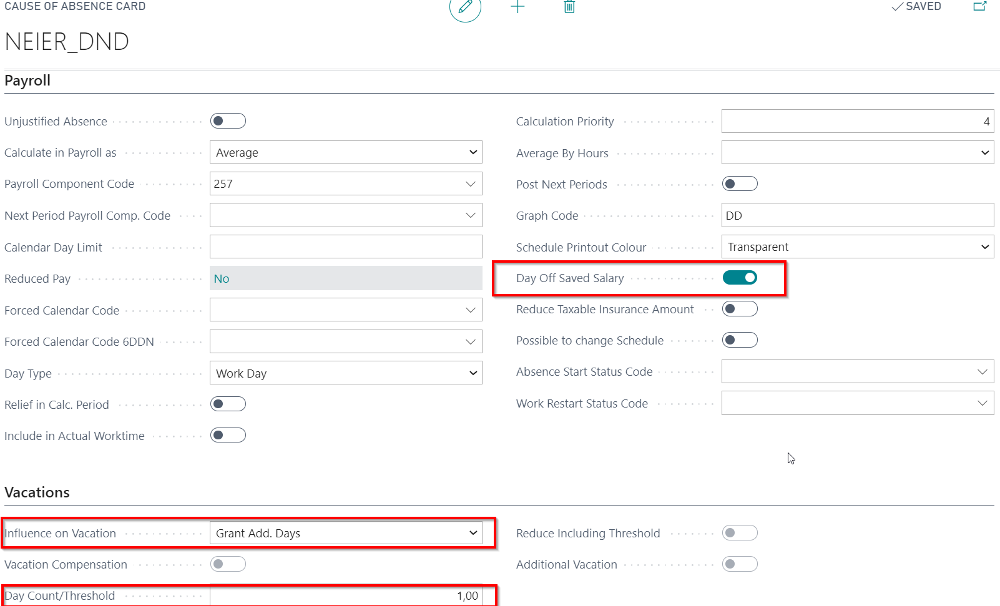
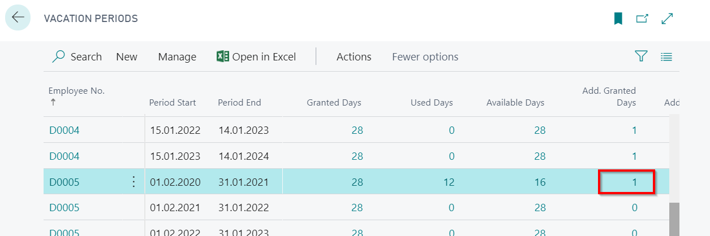

Donor Days
In the Case of Absence with Code NEIER_DND (available at: LV Payroll Role Center - Absences - Causes of Absence) should be noted that this absence is entitled to 1 additional vacation day, but the type of calculation of this absence is keeping a salary.

Tip
Should pay attention to: if is enabled a function Day Off Saved Salary, by entering an absence, system will calculate in the absence card daily/hourly gain with a note Average Gain Changed. By performing a salary calculation, will be ignored calculation type stated in Cause of Absence and the average gain of absence card will be taken into account.
Daily/ hourly calculation: The employee's payroll components are analyzed, what have a sign of the basic salary. The following types are processed: in proportion to the days worked, in proportion to hours worked, hour, day. In case if an employee card includes the mark - Average by Hours at tab Payroll, then the hourly gain are also calculated. The number of hours for salary calculation is taken from Schedule. If the employee has changed the salary during this period, then each day is analyzed and calculated average for this period.
For each additional vacation day granted, system will creates an entry in Vacation Periods register. Vacation Periods – absence Date From period.

Donor's day payment should not be included in the average gain. Therefor in Base Code ATVALIN payment component code must be excluded.
!!! For a Day-Off regards Donor Day is better to create a new cause of absence card, what would have the following setup:
In this case by calculating the balance on a day, the principle “come into effect at once” (not in proportion) will be used for the award / write-off of the additional days.